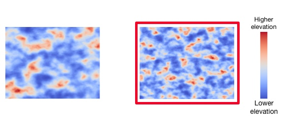

The answer in this case: the map on the right (framed in blue).
Terrain on the right is STEEPER: as you moves across the image, you will see FASTER changes in elevation, compared to the left image.
